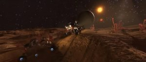
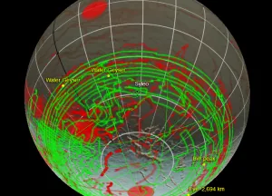
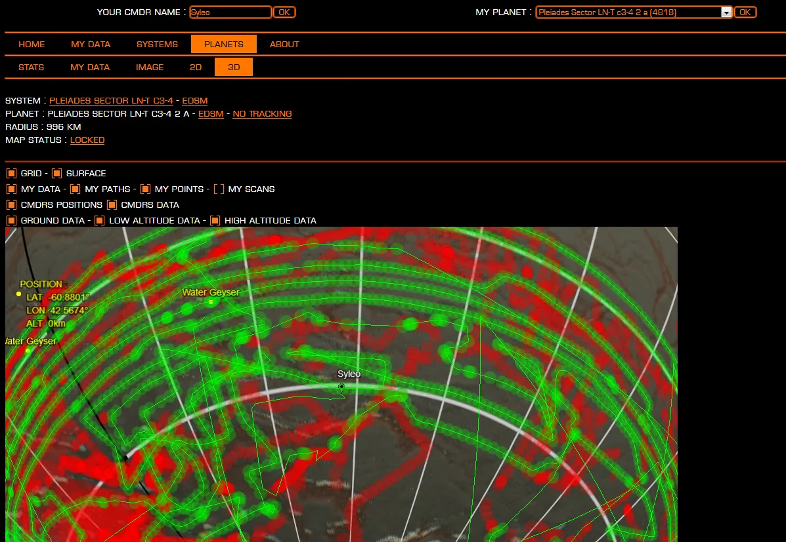

UPDATE! The hunt is over! With the advent of the galactic Codex CMDRs found tubeworms near the galactic core. These can be found in the in-game Codex classified as Sinuous Tubers in several areas around the Galactic Core sector.
Commanders Syleo and Maligno often found wreckage and degraded emissions on their travels. Recently while sorting through the data that they had collected they came across an extraordinary find of a doomed mission in 3303 that discovered an until now, unknown alien life form. The only image he was able to recover was a frame from a video showing two SRVs racing across a landscape covered in alien growths resembling terrestrial tube worms.
The commanders running the mission clearly died with their ship and were never able to bring their astonishing discovery to the world. But now our commanders have produced a candidate list of systems that could match the location of the planet in question.
We need your help locating the planet and rediscovering the alien lifeforms.

All you need to do is fly to one of the planets on the list and try to match the stars in the still image with the sky on the planet (open the image in the link to full size). If you get a good match then you should consider doing a surface search of the planet to try and find these growths.
In order to help you with this task Wing Atlantis and Canonn R&D have joined forces to provide tools to assist you.
Installing the USS-survey equipment on your ship will provide you with the location of the nearest system of interest on every jump and some brief instructions.
1. For PC users, first you will need to download and install the Elite Dangerous Market Connector.
2. Then download the USS survey plugin and unzip it in the EDMC plugin folder.
As well as automatically logging USS and Hyperdictions it will also allow you to click through to the manual forms with some of the details pre-filled.
EDMC and USS Survey plugin use is only possible on PC, so if you are using Xbox or PS4 you will need to use the reporting forms.
Note: ExTool is no longer in operation. The instructions below are kept for historical reference.
Once you have decided to search a planet then you can use Wing Atlantis’s fantastic planetary search too ExTool to track your progress on the surface and record any points of interest you find.

1. For PC users, first you will need to download and install the Elite Dangerous Market Connector. (if already done, skip this)
2. Then download the ExTool plugin and unzip it in the EDMC plugin folder.
ExTool will help you to search planetary surfaces in order to more easily find fixed points of interest (bases, thargoid sites etc) by recording locations visited on a 3d map of the body, and helping identify areas still to search.

EDMC and ExTool plugin use is only possible on PC.
Some commanders may not have ships compatible with our equipment but can still participate by visiting and searching in the systems in the likely candidate locations list identified here.
Should you locate this elusive growth, please take steps to inform us via any of the usual routes (email, discord, forums, social media) and provide a screenshot of the location in question.
Happy hunting!